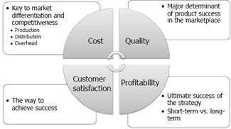
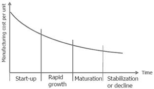
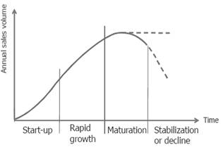
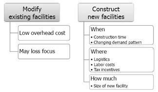

MANUFACTURE OPERATION PROCESS:
HORIZONTAL DECISION ON CARBON EMISSION STRATEGIC MANAGEMENT
Abstract
As an organization develops plans and strategies to deal with threats and opportunities present in its environment, it should consider issues related to: developing that is capable of producing the services and goods in the demanded quantities, planning how to use the system effectively, and managing key elements of the operations of carbon emission. Each of these topics is described briefly in the following.
Authors:
Dr. S. Rick Fernandez
School of Management, Shanghai University
Center for Innovation and Knowledge Management
Shanghai, China
Dr. Nomin-Erdene Chimeddorj
School of Management, Shanghai University
Shanghai, China
Dr. Othman Abada
School of Management, Shanghai University
Center for Innovation and Knowledge Management
Shanghai, China
Paper Transcript of Paper Titled :
MANUFACTURE OPERATION PROCESS:
HORIZONTAL DECISION ON CARBON EMISSION STRATEGIC MANAGEMENT
Manufacture Operation Process:
Horizontal Decision on Carbon Emission Strategic Management
Dr. S. Rick Fernandez
School of Management, Shanghai University
Center for Innovation and Knowledge Management
Shanghai, China
Dr. Nomin-Erdene Chimeddorj
School of Management, Shanghai University
Shanghai, China
Dr. Othman Abada
School of Management, Shanghai University
Center for Innovation and Knowledge Management
Shanghai, China
Abstract— As an organization develops plans and strategies to deal with threats and opportunities present in its environment, it should consider issues related to: developing that is capable of producing the services and goods in the demanded quantities, planning how to use the system effectively, and managing key elements of the operations of carbon emission. Each of these topics is described briefly in the following.
Keywords- Manufacture; Carbon Emission; Decision Making; Development; Improvement; Customers
Introduction
Do you drive a car, write checks, have a savings account, or get medical treatment? If so, already you have been affected by operations and operations management. This is the Operations processes manufacture that transform inputs of Carbon Emission (labor, capital, materials, and energy) into outputs (services and goods) final customers will acquire those final products. The Services points are intangible products, and providing goods target are physical products. According to the step classification used by the United State Department of Commerce and Department of Labor and services (utilities, entertainment, transportation, education, communications), and other multiple services on this manufacture operation. Goods are described as articles of trade, merchandise, or wares. Manufacturing is a specific issue referring to the main production.
Every operation employ, most to build facilities, and purchase equipment with an objective to provide intangible services, such in different sector of the economic in order to be finished and get satisfaction from customers. Well on manufacture can see the process to be engaging transformation products and services. The operating objective of manufacture and enterprises are making production & final products to have billions of banking transactions, thousands of fire runs, each day-year, and they do so very efficiently.
The working targets in operations are focus to maximize greater output than they would be working, because manufactures [20] have been developed on sophisticated facilities and equipment that easily could increase worker productivity. Enterprises also provide internal condition to their employ as: training in order to have strong workforces, in this way can raise their knowledge on the manufacture area, and also improve their capabilities. As a result of these productivity improvements and training enrichments, more outputs are produced and the standard of living increases for everyone.
Operations and production management have the same meaning as multidiscipline field that focuses on managing an enterprises operation. We can notice that, scope of operations management includes decision making about the design, planning, and management of the several factors that can affect manufacture operations, according to the pollution of Carbon Emission, [20]. Decisions include: what products to produce, how large a facility to build, where to locate the facility with respect to customers and suppliers, what methods to use to enrich product quality, how many quantity to produce next month, how employees should be trained, how many employ need on the manufacture, what techniques and equipment to use. Operations managers most to apply ideas and technologies to increase productivity and reduce costs, in order to be competitive on internal or external market, [17] improving flexibility to meet rapidly changing customer satisfaction, shorten delivery time, enhance product quality, and improve customer service which, was commented by [19].

Figure 1. Evaluation on Operation Strategic Manufacture, Authors illustration
Literature Review And Manufactureing Strategic
There has been a rich body of literature on the management and operations of global supply chain networks, [18] that consist of markets and manufacturing facilities [20] in several countries with different strategic operation platform environments, to joint international markets. Readers are referred to some recent survey papers, such as [2]; [1]; [5], and [14], for comprehensive reviews of various issues addressed in the literature pertaining to the management network of global supply chains as mention by [19], and according to maximize overseas market performance. Readers also can find from [13], a summary of research methodologies used to implement strategic plans on global supply chains. One of the main strategic of the literature in recent years has been the development of operational and international market strategies, to hedge against market uncertainty and internal market [18] at international market risks, such as integral development at the market behavior. In particular; [7], [2]; [10]; [8]; [6]; [12]; [9]; [3], and [4], those researchers use mathematical programming and other quantitative models, to qualify a study and effectiveness of management network flexibility (as manufacturing location, inventory replenishment, allocation of production, platform implementing, etc.) at overseas market, which are uncertainties. Although some of these models include after logistics a profit maximization as their objectives (see [14]) for a list of supply chain papers with logistics profit maximization objectives), the effects of logistics cost and tariffs as mentioned by [21] are simply treated as parts of the variable costs of the products and financial flows (for example, adding a percentage of a tariff to the cost of a product imported into a country, or subtracting a percentage of the corporate extra cost from the profit made in a country). Thus, the inclusion of international logistics cost in these models typically does not change the structures of the underlying optimization issue. Another source of literature, including [16]; [2]; [11]; [22]; [5] and [15], considers using networking platform as commercial methods could improve the performance of destination supply chain management. In these papers, commercial networking platform, along with countries integration and distribution platform decisions, become part of decisions that could take advantage of differentiated of each countries logistics cost.
Developing Methodologies
Develop ideas on production making is begins to produce product improve. Product development involves determining the characteristics and features of a product. For example, Should a car be equipped with side air bags? Product development begins with an assessment of customer needs and includes a detailed product. The facilities and equipment that will produce the service or good, as well as the information systems needed to monitor and control performance, should be designed. Product development is a cross-functional decision making process that requires teamwork to make improve and different products for market and implement the marketing, financial, and operating plans needed in order to join the market successful.
Develop and improve product is a critical activity because it determines the characteristics, features, and functionality of the market need [17]. On the product development have to evaluate cost and quality as well as its features and performance, and these are important factors on which customers make purchasing decisions. Techniques such as design for manufacturing and assembly are being implemented to improve product quality and lower Carbon Emission costs by focusing on operating issues during product design. This is critical even though improving to reduce costs is a small part of the total cost of a product because develop may determine up to 90 percent of the total production costs. For example, when police departments develop a procedure for booking a suspect, the procedure dictates the amount of time spent by the police officers, clerical staff, and management each time a booking takes place. A procedure that wastes time and duplicates effort will substantially affect the department's costs.
method for improving product because it focuses developing efforts on customer needs. QFD is a set of planning and communication that focuses attention on customer request and describes each part of improving that affect these requests. QFD procedures provide a framework for product development that enhances learning and coordinates actions.
Development Process mentions how the product will be made. The processes develop decision have two major components: a technical or engineering component and a scale economy or business issue. The technical component includes selecting equipment and sequences for production. For example, a fast food restaurant should decide whether its hamburgers would be flame-broiled or fried. Decisions are made about the sequence of operations. For example, should a car rental agency immediately inspect a car that has been returned by the customer, or first send it to be cleaned and washed by maintenance? Most likely, the car should be inspected first so that damage that might occur in the cleaning process would not be counted against the customer.
The scale economy or business component involves applying the proper amount of mechanization (tools and equipment) to make the organization's workforce more productive. This includes determining:
- If the demand for a product is large and enough to justify mass production, such as a fast food restaurant that purchases specialized equipment to make a large volume quickly;
- If there is sufficient variety in customer demand so that flexible production systems are required, such as a full-service restaurant that purchases general-purpose equipment to produce its diverse menu; or
- If demand for a product is so small that it cannot support a dedicated production facility.

Figure 2. Process life cycle, Authors diagram illustration
Mass customizations are a processes alternative to mass-producing standardized products. Customers are demanding both greater products with low price on goods and services as suggested by [21]. To enhance value to their customers, enterprises are searching for ways to improve the apparently conflicting aim. Mass customization enables enterprises to quickly develop, produce, and deliver a high volume of differentiated products that meet specific customer needs at mass production prices. Mass customization provides an impressive return on investments by producing products for many small market segments on the same equipment and facilities.
Facility develop are involving on the capacity, location, and layout for the facility. Capacity is a measure of an organization's ability to provide the demanded services or goods in the quantity requested by the customer and in a timely manner. Capacity planning involves estimating demand, determining the capacity of facilities, and deciding how to change the organization's capacity to respond to demand.
Facility layout is the arrangement of the workspace within a facility. It considers which departments or work areas should be adjacent to one another so that the flow of product, information, and people can move quickly and efficiently through the production.

Figure 3. Product life cycle, Authors Diagram illustration
Manufacture Planning Process
On manufacturing planning may describe how management expects to use the existing resource base that was created during the process on production of Carbon Emission. One of the outcomes of this planning process may be to change the system design to cope with changes in the environment. For example, management may decide to increase or decrease capacity to cope with changing demand, or rearrange layout to enhance efficiency.
Decision making on plan production depend on specific time. Long-range decisions could include the sequences number of facilities required to meet customer needs, how facilities could be altered to produce new products, or how technological change might affect the methods used to produce services and goods. The specific time for long-term planning varies with the sector and depends on how long it would take on the enterprises to build new facilities or make major technological changes. For example, in the aircraft industry it may take five to ten years to design a new aircraft and build a facility to produce it. So management must plan at least that far into the future. A car rental agency, on the other hand, would need a much shorter time horizon for production planning because it can make changes more quickly.
how much material to order on an aggregate basis.
Capacity Growth Planning

Source: Authors Illustration
Conclusion
Operations and operating strategies with the overall strategy of the organization (including engineering, financial, marketing, and information system strategies) synergy can result. Operations become a positive factor when facilities, equipment, and employee was training are viewed as a means to achieve organizational aim, rather than suboptimal departmental aim. The criteria for judging operations is changing from cost control, which is a narrowly defined operating objective, to more global performance measures such as product [21], performance and variety, product quality, delivery time, and customer service. When flexibility is designed into operations, an enterprise is able to rapidly and inexpensively respond to changing customer needs.
Manufacture operations should always be a value added activity and reduce constantly carbon emission. This means that customers should be willing to pay more for the finished product than the total costs of the inputs. In the private industry, the difference between the price consumer’s pay and the cost of production is profit; profit can be reinvested to build new and better products, thus creating wealth for society. In the public sector, the benefits added by designing and producing a new product should always be greater than the costs. This added value, once again, represents an increase in wealth for society. For example, effective fire protection should reduce fire insurance premiums, decrease the number of fires because of successful fire prevention programs, and cut the losses from fires because of rapid response and better fire-fighting techniques and equipment. Value added fire protection would have more benefits to society than the sum of the costs of providing it. Training firefighters, purchasing equipment, and selecting a new location for a fire station, should all be undertaken with this value-added approach in mind? All operating decisions, indeed all the decisions made by the organization, should consider how customers or potentialcustomers would value the outcome of the decision.
Acknowledgment
Thank you to Shanghai University for providing me with study support as well as the Colombian Embassy in China, more especially Carmenza Jaramillo Gutierrez who is the actual Colombian Ambassador. Also, I appreciate the CSC Scholarship Organization for giving me this incredible support to finish my studies (Ph.D.).
References
[1] Cohen, M. A., A. Huchzermeier. 1999. Global supply chain management: A survey ofr esearch and applications. Quantitative Models for Supply Chain Management. Kluwer Academic Press, Boston, 669–702.
[2] Cohen, M. A., H. L. Lee. 1989. Resource deployment analysis of global manufacturing and distribution networks. J. Manufacturing Oper . Management 2(1) 81–104.
[3] Ding, Q., L. Dong, P. Kouvelis. 2007. On the integration ofpr oduction and financial hedging decisions in global markets. Oper. Res. 55(3) 470–489.
[4] Dong, L., P. Kouvelis, P. Su. 2010. Global facility network design with transshipment and responsive pricing. Manufacturing Service Oper. Management 12(2) 278–298.
[5] Goetschalckx, M., C. J. Vidal, K. Dogan. 2002. Modeling and design ofglobal logistics systems: A review ofintegrated strategic and tactical models and design algorithms. Eur. J. Oper. Res. 143(1) 1–18.
[6] Gurnani, H., C. S. Tang. 1999. Note: Optimal ordering decisions with uncertain cost and demand forecast updating. Management Sci. 45(10) 1456–1462.
[7] Hodder, J. E., M. C. Dincer. 1986. A multifactor model for international plant location and financing under uncertainty. Comput. Oper . Res. 13(5) 601–609.
[8] Huchzermeier, A., M. A. Cohen. 1996. Valuing operational flexibility under exchange rate risk. Oper. Res. 44(1) 100–113.
[9] Kazaz, B., M. Dada, H. Moskowitz. 2005. Global production planning under exchange-rate uncertainty. Management Sci. 51(7) 1101–1119.
[10] Kogut, B., N. Kulatilaka. 1994. Operating flexibility, global manufacturing and the option value of a multinational network. Management Sci. 40(1) 123–139.
[11] Kouvelis, P., G. J. Gutierrez. 1997. The newsvendor problem in a global market: Optimal centralized and decentralized control policies for a two-market stochastic inventory system. Management Sci. 43(5) 571–585.
[12] Lowe, T. J., R. E. Wendell, G. Hu. 2002. Screening location strategies to reduce exchange rate risk. Eur. J. Oper. Res. 136(3) 573–590.
[13] Lu, L. X., J. A. Van Mieghem. 2009. Multimarket facility network design with offshoring applications. Manufacturing Service Oper. Management 11(1) 90–108
[14] Meixell, M. J., V. B. Gargeya. 2005. Global supply chain design: A literature review and critique. Trasportation Res. E 41(6) 531–550.
[15] Miller, T., R. de Matta. 2008. A global supply chain profit maximization and transfer pricing model. J. Bus. Logist. 29(1) 175–200
[16] Nieckels, L. 1976. Transfer Pricing in Multinational Firms. John Wiley & Sons, New York.
[17] S. Rick Fernandez., (2013a) Initiative Analysis to Enter into Potential and Restricted Market: Small, Medium and Largest Enterprises Having Chance into a Virgin Market: Latin American (CELAC) and China (Practical, China Case), International journal of business and management, 8(3)103-121.
[18] S. Rick Fernandez., (2013b) “Commercial Networking Initiative: CELAC Group Economic Enterprises Entering to Potential Market”, Research Journal of economics & Business studies 2(5) 6-15
[19] S. Rick Fernandez.,(2013c)., Survey Methodology to Ensure Appropriate Data Collection: CELAC’s Firms’ Beyond the Region., Journal of Sociological Research, Vol. 4, No.2, pp. 292-307.
[20] S. Rick Fernandez., and Laaria, M., (2013a) “Understanding manufacturing strategy and its implications”, Research Journal of economics & Business studies 2(7) 48-60
[21] S. Rick Fernandez., and Laaria, M., (2013b) “The insight into service science and its Applications to future service production”, Research Journal of Commerce & Behavioral Science 2(7) 32-4
[22] Vidal, C. J., M. Goetschalckx. 2001. Global supply chain model with transfer pricing and transportation cost allocation. Eur. J. Oper. Res. 129(1) 134–158.
AUTHORS PROFILE
Dr. S. Rick Fernandez
Dr. S. Rick Fernandez was born in Cali City – Colombia on July 9, 1977. He moved as a child with his family to the Archipelago of San Andres, Old Providence and St. Catalina – Colombia where is RAIZAL, Island considered by UNESCO as Biosphere Reserve. In high middle school, he played basketball and football.
He is Ph.D. Scholarship holder from Shanghai University (Shanghai, China) in Management – Emphasis in Commercial Cluster Integration “Taking CELAC’s Firms’ as Example into the Research Case”. He has been awarded Master in International Commerce from Shanghai University (Shanghai, China) and graduated from Santiago de Cali University (Cali, Colombia) with a bachelor degree in Finance and International Business.
Dr. Fernandez served at the Ministry of Environmental Protection (MEPFECO), in China as Advisory Expert and Evaluator Risk; SANTO THOMAS University and National Service for Learning SENA, as Lecturer in Colombia. He is an expert advisor to international firms, and is the author of a Book entitled “Establishing an FTA Between China and Colombia”, including several international articles published in (Canada, United States, Singapore, Germany and Kenya). S. Rick as an author of several articles is an ad-hoc reviewer to the International Business Review from UK (SSCI Journal), also was a lecturer at The 4th African International Business and Management (AIBUMA 2013) Conference at University of Nairobi – Kenya.
Dr. Nomin-Erdene Chimeddorj
Dr. Nomin-Erdene Chimeddorj was born in Ulaanbaatar City- Mongolia, on November 8, 1987. She as a child lived with her family Ulaanbaatar City- Mongolia, and did her Secondary and Bachelor School.
She is Ph.D. Scholarship holder from Shanghai University (Shanghai, China) in Management – Emphasis on Carbon Economics of Mongolia Study Case as Challenge. She has been awarded Master in International Commerce from Shanghai University (Shanghai, China).
Dr. Chimeddorj has been published an article entitle: Reasoning About Fuzzy Logic: Concepts, Attributes and Its Focus to the Future.
Dr. Othman Abada
Dr. Othman Abada was born in the economic capital City of Morocco – Casablanca on May 28, 1982. Where he finished his high school studies, later on in 2006 he graduated from one of the best Universities in Morocco known as Hassan II University of Literature and Human Sciences.
His deep interest in the Emerging economies took him to China where he was granted from scholarship of Master at Shanghai University in the Major of International Economics and Trade.
He is a Ph.D. from Shanghai University – China (School of Management) with the subject of ”Research on Challenge Experienced by Moroccan Service Firms Based in China During the Implementation of Innovation Strategies.
Dr. Abada published some articles in Chinese Language in one of the well known mainland china journals, he also served as a consultant for Arab Investors and North-African Firms entering the people republic of China.